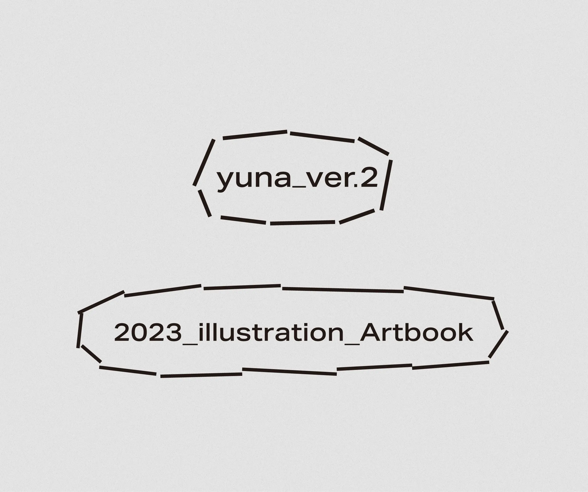
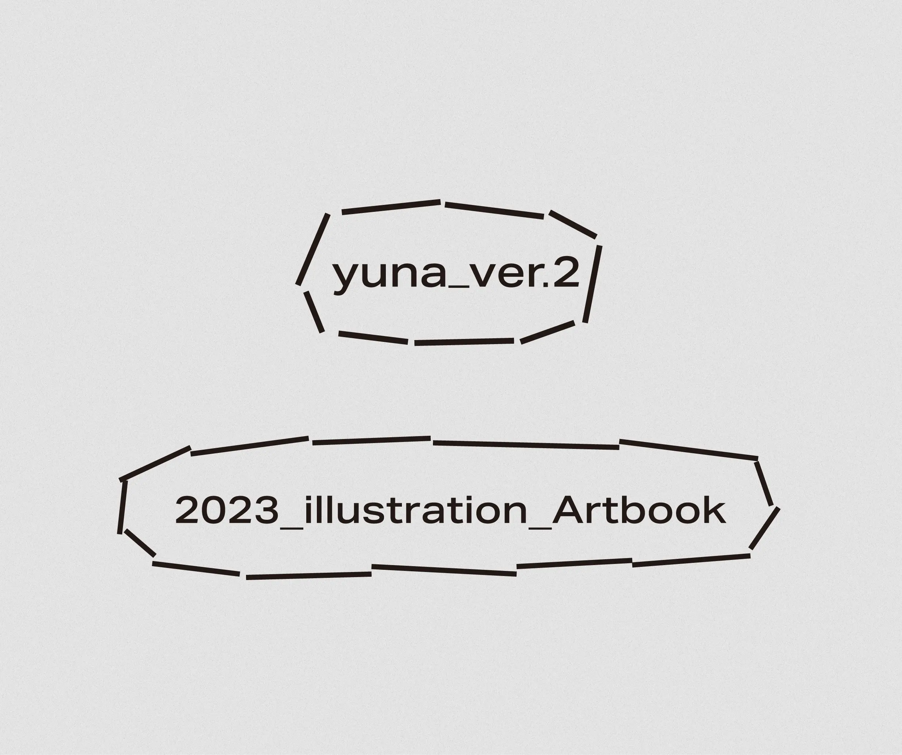

yuna
Sony Music VEEよりデビューし、タレント活動を行う月白累さんのデザイン制作を担当しています。「デジタルカメラで映し出された中でしか見えない存在」をコンセプトに自信の世界観はとても無機質な存在となっています。しかし、月白さんの活動の魅力として歌唱の高さもあり、その歌唱を行なっている際は、いつもとは違う力強い歌声を魅せてくれます。
その無機質な中にところどころ感じられる人としての有機さは、他の活動者にはない一番の価値と感じ、有機なものと曖昧な世界観を世界観の基点としロゴをはじめとした、配信画面デザイン、スケジュール表デザインなどに展開しつつビジュアル開発を行いました。
We are in charge of design
production for Rui Tsukihaku, who
debuted
from Sony Music VEE and is active as a TV personality.
Her worldview
is
very inorganic, based on the concept of "an existence that can only be seen in the
reflection of
a digital camera."
However, one of the most attractive aspects of
Ms.
Tsukihira's activities is her singing, and when she sings, her powerful voice is always
different from her usual voice.
The organic quality that can be
felt in some places in the
inorganic
nature of his activities is the most valuable thing that he does not have in other
activities,
We developed the logo, distribution screen design,
schedule
design, and other visuals based on this organic and ambiguous view of the world.

 
